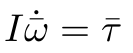
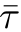
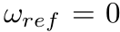
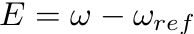
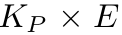

To drive the angular rates to zero by applying a proportional controller torque.

When satellite is ejected from launch vehicle, it may have high angular velocities (also called as angular rates) about its axes. The satellite is required to point in specific direction for proper functioning(refer the section: Requirement of control). The angular motion of satellite in body frame is governed by equation
Where I is moment of inertia matrix in body frame andis torque acting on the body. So as equation suggests, to change the angular velocity of satellite, torque has to be applied on it. In space environment there are external torques acting on the satellite. But the main source of the torque is the control torque applied by actuators of the satellite. This experiment will describe the control on angular rates using proportional controller. Note that, in this experiment external torques are neglected for simplicity.
Requirement of Control
Generally, from different requirements (as elaborated below), it is needed that the satellite should point in a specified direction. Thus if we consider frame definitions according to previous experiment, Euler angles (https://en.wikipedia.org/wiki/Euler_angles)between orbit frame and body frame should be zero. This requirement generally arises due to following reasons:
Communication: Satellite sends and receives the data in form of electromagnetic waves from ground stations on the earth. This communication can be effective only if antenna and other communication devices on satellite are oriented properly.
Payload: Some satellite payloads like optical payload,cameras and remote sensing devices might require accurate point to receive and collect the data.
Power: To generate the power solar panels has to face sun for sufficient amount of time.
Thus in order to orient the satellite we have to first determine the current orientation of the satellite and bring it to desired orientation with respect to reference frame. Attitude determination is the process of determining the current orientation of the satellite using sensor data. Control is the process in which control law is executed and actuators modify the satellite orientation accordingly.
In this experiment we will simulate simplified situation. Instead of stabilizing to desired orientation, we first stabilize the angular rates. In this case we don't bother about the final orientation. It is assumed that satellite is launched with higher angular rates. The desired value for angular rates is zero. Thus torque is applied accordingly. This simulation uses proportional controller to stabilize angular rates.
Detumbling and Nominal Mode
Generally there are two modes in satellites: Detumbling and Nominal. Detumbling is the process of stabilizing the angular rate of the satellite after orbital insertion. In detumbling mode, initial rates may be very high as the satellite is ejected from the launch vehicle. In this mode sensors like GPS are not available due to power constraints. Thus attitude of satellite is not known. So to bring down initial angular rates we have to use some coarse controller. In the case Pratham, only magnetometer is ON during detumbling. Using rate of change of magnetic field vector in body frame, we can estimate angular rates. Then proportional controller is applied to bring down the angular rates. This control algorithm is called as B-dot algorithm. If rates are below certain threshold for some time window then control is switched to nominal mode.
In nominal mode, rates are low. We use PID controller to determine the attitude of the satellite and stabilize the Euler angles within required limits. The nominal controller is a fine controller.

In proportional controller, controller output is proportional to the difference between reference value and current value of the variable. This term is also called as the error signal. In this case  is desired (reference) value of angular rates. Thus at each step error term in angular rates i.e.  error will be calculated. Then output of controller will be . This control torque will then drive the angular rates accordingly.
In this experiment, simple proportional controlled is applied to reduce the angular rates of the satellite.